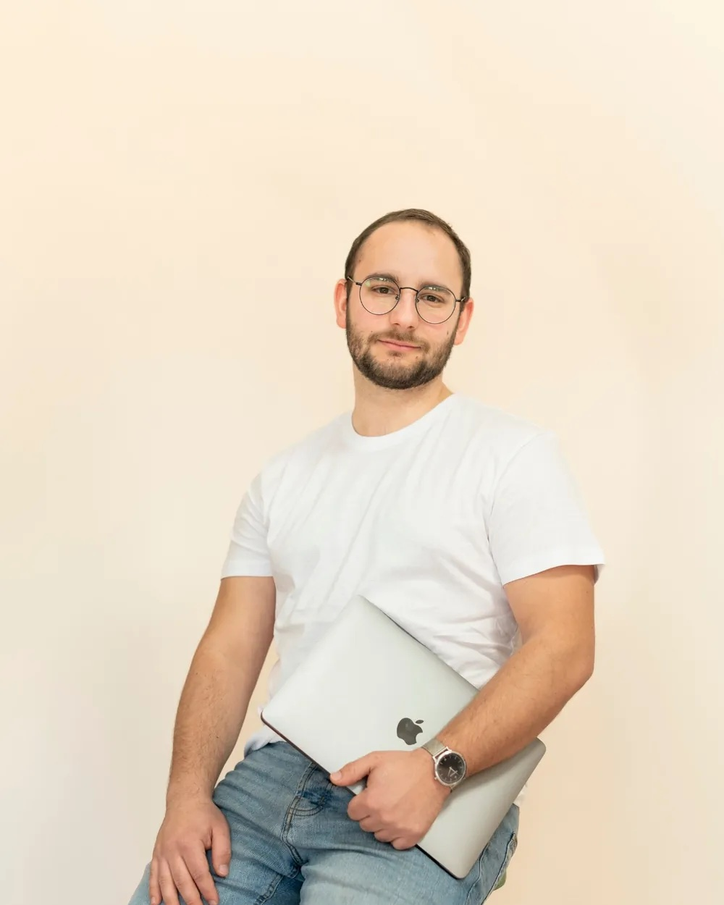

I. törvény
A követőszám a régi kor relikviája.Follower count is a relic of the old age.
Az új korban minden poszt tiszta lappal indul. Nem az számít, hányan követnek, hanem hogy hányan nézik végig.

81×
ROAS, a legjobb eredményünk e-commerce kampányban
300M+ Ft
kezelt büdzsé 2022 óta
Igen, a nevünkben még ott a social. A stream maradt. Ami benne folyik, az változott.Yes, our name still says social. The stream stayed. What flows in it changed.
A három törvény
Olivér, alapítóTenerife · Budapest
Interest media ügynökségAz új kor szabályai
I. törvény
Az új korban minden poszt tiszta lappal indul. Nem az számít, hányan követnek, hanem hogy hányan nézik végig.
II. törvény
Minden megjelenésért a legjobb alkotókkal versenyzel, nem a konkurenciáddal. Ami érdekes, azt a platform ingyen viszi el milliókhoz. Ami unalmas, azt büdzsével sem lehet megmenteni.
III. törvény
A legtöbb vállalkozás még a régi kor szabályaival játszik: posztol és reménykedik. Az új kor stratégiája: adatból tudni, mi érdekli az embereket, és rendszert építeni, ami az érdeklődést bevétellé alakítja.
Képkockák az ügyfeleinknek készült videókból.
300M+ Ft kezelt büdzsé 2022 óta.